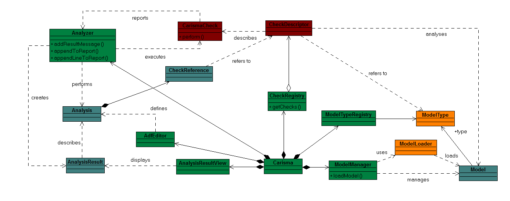

CARiSMA is implemented as an Eclipse-based plugin while itself has a plugin architecture to be easily extensible. An excerpt of the contents of the main plugin carisma.core can be seen in Figure 1.
The main class Carisma is registered as an Eclipse plugin and provides access to the various structures, serving as the controller for the different components of the tool.
An Analysis is executed on a Model of a certain ModelType registered within the ModelTypeRegistry. The models themselves are provided by the ModelManager and the ModelLoader for the corresponding ModelType. User Guide: Creating an Analysis
CARiSMA executes analyses consisting of various CheckReferences to CheckDescriptors. These descriptors define the CarismaChecks that have been registered with the CheckRegistry. Each CarismaCheck may have any number of CheckParameters defined, which has a certain ParameterType. Checks may define pre- and post-conditions to use in combination with a blackboard (not pictured) to exchange information between them. The Check Mechanism: Implementing CarismaChecks Creating an Eclipse Plugin containing a CarismaCheck using a Template The Check Mechanism: Pre-/Post-Conditions and the Blackboard
The AnalysisHost interface provides access to this blackboard, as well as methods for displaying the results of an Analysis in the AnalysisResultsView. The Analyzer is the main CARiSMA implementation of the AnalysisHost interface. The Check Mechanism: Generating Check Output